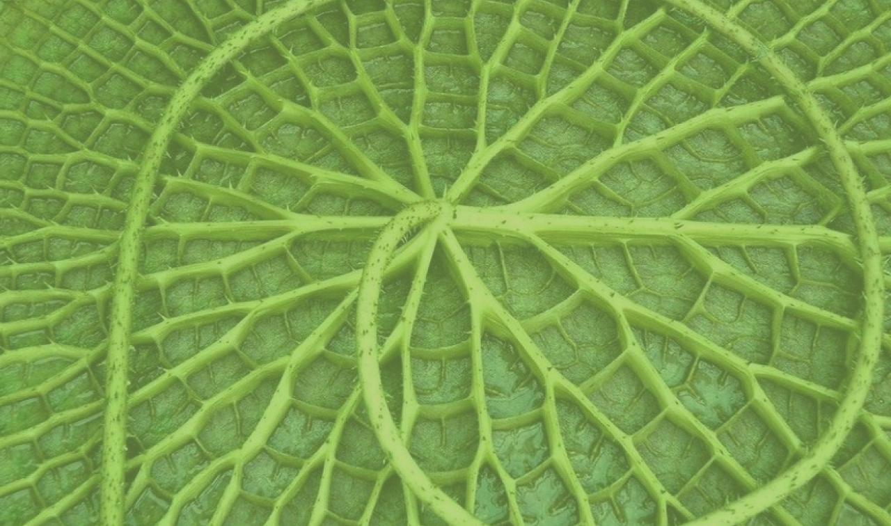
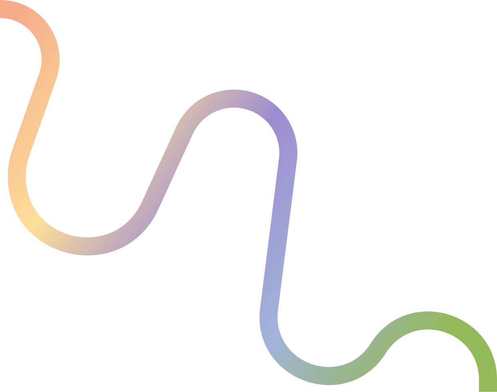
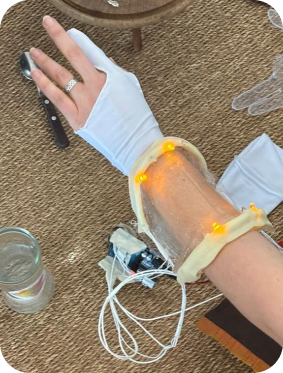
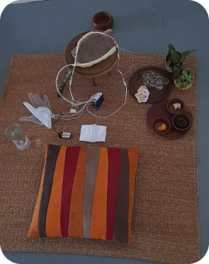
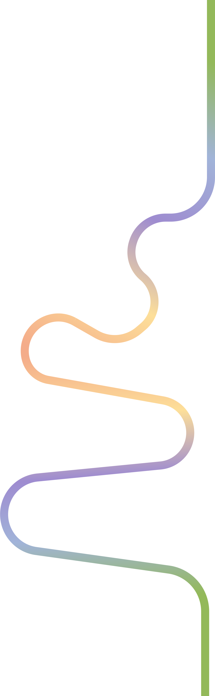
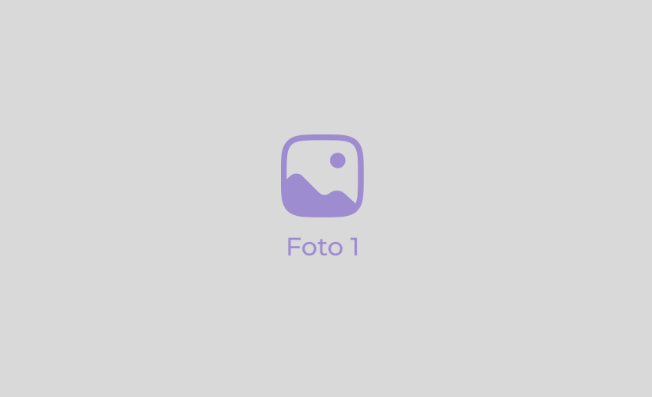
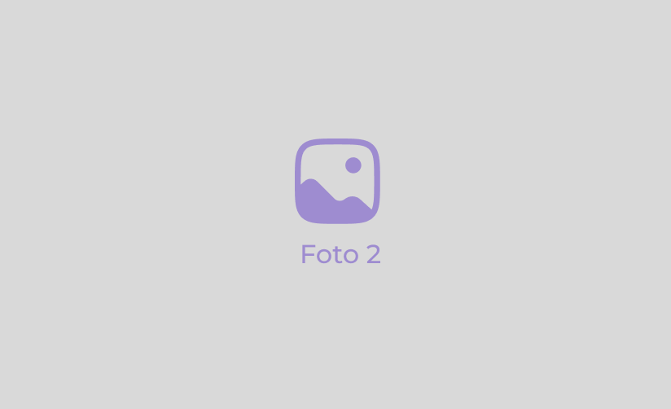
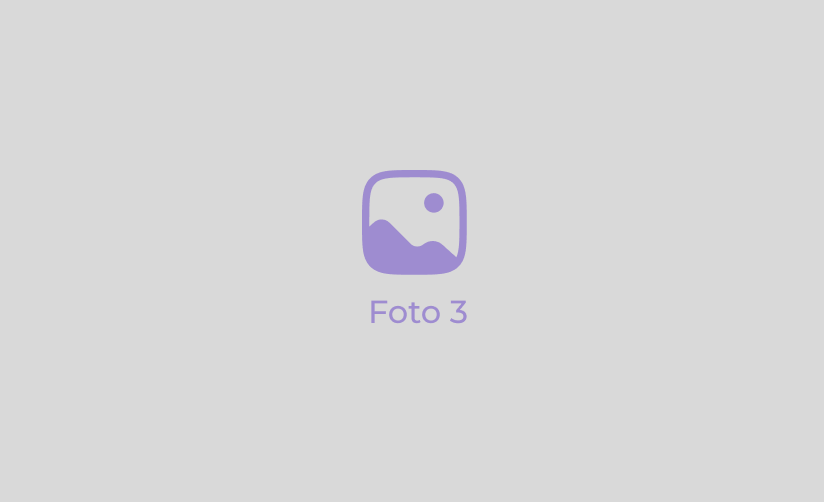

INTEGRANTES
Lara Horianski
Victoria Besnati
Abigail Bertelli
Lourdes Grossi
Sofia Diaz
PRESENTE
La luz artificial ha sido clave para el desarrollo de la sociedad, impactando la productividad y
el
acceso a
servicios. Sin embargo, su expansión ha generado consecuencias negativas en la salud. La adicción a
pantallas y
la exposición constante a esta luz han alterado los ciclos de sueño, debilitando el sistema inmunológico y
aumentando el riesgo de enfermedades crónicas como obesidad, diabetes y trastornos cardiovasculares, además
de
afectar la salud mental con ansiedad, depresión e irritabilidad.

¿QUÉ HACEMOS QUE PASE?
El Ministerio de Salud lanza la Nueva Piel, un avance tecnológico gratuito que conecta a las
personas consigo
mismas y con los demás. Este dispositivo cambia de pigmentación para reflejar estados emocionales y permite,
a
través del tacto, compartir percepciones y emociones, promoviendo una nueva forma de comunicación sensorial
y
visual. Aunque no proporciona abrigo, su textura de gel es cómoda y su aplicación es controlada en clínicas.
Para su funcionamiento entre usuarios, requiere conexión a Internet.
U1/TP1:
Universo
NUEVA PIEL
Elegimos crear la nueva piel como objeto multisensorial y simular tanto su aspecto físico como
su
funcionalidad real,
acorde a nuestro universo utópico. Estéticamente, usaremos bioplástico transparente hecho con gelatina.
Técnicamente, usaremos un sensor que capturará la frecuencia cardíaca y oxigenación en sangre, cambiando el
aspecto de la piel en respuesta. Para alterar la frecuencia cardíaca del usuario, probaremos distintos
alimentos
que afecten significativamente sus papilas gustativas.


U2/TP2:
Objeto multisensorial

HISTORIA
Mabel y Laura se conocen de la peor manera: un incidente con un perro las enfrenta y, para
su
sorpresa, descubren
que deberán trabajar juntas. La tensión entre ambas crece hasta que descubren un plan secreto en su empresa
para
reemplazar a los empleados con robots. Unidas por la necesidad de detener este proyecto, comienzan a
colaborar,
derribando prejuicios y formando una inesperada conexión.
Sin embargo, una traición pone en peligro su investigación, y Laura es despedida. Mabel descubre que Ariel,
el
gerente de recursos humanos, es el responsable del plan y juntas logran exponerlo, salvando la empresa. En
el
proceso, se dan cuenta de que su relación va más allá de la amistad, y deciden construir una vida juntas
basada
en amor y respeto, mientras lideran una transformación hacia la sostenibilidad en la empresa.
U1/TP2:
Historia completa y transmedia
TRANSMEDIA
Redes sociales de los personajes
Experiencia transmedia en las calles


